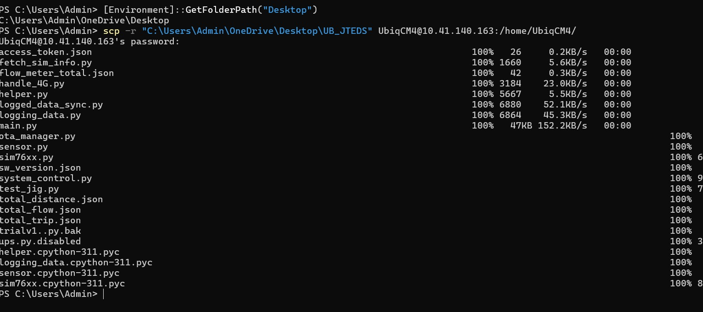

SOP: Change Device Name from UBIQCM4XXX to JTURPCM4XXX
Purpose
This document explains, in simple and clear terms, how to: - Change the device name from UBIQCM4XXX to JTURPCM4XXX - Remove Remoteit software from the device - Update the device software (UB_JTEDS) - Verify SIM card and 4G internet connectivity - Change the device hostname
This guide is written so that a person with minimal technical knowledge can follow it step by step.
Prerequisites
Before starting, ensure the following: - Laptop or PC (Windows, Linux, or macOS) - Internet connection - Device powered on - Device connected to the internet (hotspot or LAN) - Device IP address - UB_JTEDS folder available on the PC
Step 1: Connect to the Device Using SSH
SSH allows you to log in to the device remotely using a command line.
Open Terminal or Command Prompt
- Windows: Command Prompt or PowerShell
- Linux / macOS: Terminal
Login Command
Example:
If prompted: - Type yes - Enter the device password
You are now logged into the device.
Step 2: Upload New Software (UB_JTEDS)
Backup Existing Software
Run the following command on the device:
This keeps a backup of the existing software.Copy New UB_JTEDS from PC to Device
On the PC terminal:
In case of Linux
In case of Windows
Example : Refer the screenshot for more information Wait until the copy process completes.
Set Correct Permissions
Log in to the device and run:
This will have no outputStep 3 : Correct your main.service(Most Important to get the data in JT Portal)
Edit the service file
Replace the [Service] section with THIS
[Unit]
Description=Main Python Script Service
After=network.target pigpiod.service
Requires=pigpiod.service
[Service]
Type=simple
User=UbiqCM4
WorkingDirectory=/home/UbiqCM4/UB_JTEDS
ExecStart=/usr/bin/python3 /home/UbiqCM4/UB_JTEDS/main.py
Restart=on-failure
RestartSec=5
StandardOutput=journal
StandardError=journal
[Install]
WantedBy=multi-user.target
Apply changes (DON’T SKIP)
Check
Step 4: Remove Remote.it Software
Update Device Packages
This might take some timeCheck for running Remoteit services:
Stop Remote.it Services
Disable Remote.it Services at Boot
Remove Remote.it Completely
Verify Removal
If no output appears or the output is something like the screenshot below , Remoteit has been successfully removed.
Step 5: Restart Device Services
sudo systemctl daemon-reload
sudo systemctl restart main
sudo systemctl restart system_control
sudo systemctl restart logged_data_sync
sudo systemctl restart handle_4G
Verify Software Operation
Expected output:
Step 6: Update Device Access Token
Navigate inside UB_JTEDS :
Open the access_token.json file :Old format:
New format:
Note: Please write the access token on the box with marker.Step 7: Verify SIM Card and 4G Connectivity
Expected output:
If that doesn't work then follow this
Expected output:
Step 8: Change Device Hostname
Check Current Hostname
Set New Hostname
Example:
Reboot the CM4
Reverify Hostname
Update Hosts File
Change:
To:
Save and exit: - CTRL + O, then Enter - CTRL + X
Reboot the Device
This will restart the system from software and hardware both
Wait approximately two minutes, then power the device off and on again.
9. Install Tailscale (Remote Access)
Download the Statis Binary file named : arm64: tailscale_1.94.2_arm64.tgz (This should be on download)
Copy file to device:
Extract the tgz file and navigate to that folder :
Install:
sudo cp tailscale /usr/local/bin/
sudo cp tailscaled /usr/local/sbin/
sudo chmod 755 /usr/local/bin/tailscale
sudo chmod 755 /usr/local/sbin/tailscaled
sudo cp tailscaled /usr/local/sbin/
sudo chmod 755 /usr/local/sbin/tailscaled
sudo chmod 755 /usr/local/bin/tailscale
Paste:
[Unit]
Description=Tailscale node agent
After=network.target
[Service]
Type=simple
ExecStart=/usr/local/sbin/tailscaled
Restart=always
RestartSec=5
[Install]
WantedBy=multi-user.target
Start:
sudo mkdir -p /var/lib/tailscale
sudo systemctl daemon-reload
sudo systemctl enable tailscaled
sudo systemctl daemon-reload
sudo systemctl reset-failed
sudo systemctl restart tailscaled
Check the status of Tailscaled:
It should show Runnning.
Start the tainet channel:
Approve device in browser.Get remote IP:
Remote SSH from anywhere:
Optional: Copy Code from Device to PC
Final Technician Checklist (MANDATORY)
- Write the device Access Token on device body using permanent marker
- Label the SIM card as JT
- Note the Tailscale IP in deployment sheet
- Verify remote SSH login works
- Confirm data visible in JT portal
Deployment Complete
Device is now ready for field installation and remote maintenance.